Minecraft Java 1.20.1 / Fabric / October 25, 2026
Cave camps that stay intact.
Actual client frames and native receipts for the defended camp, underground crops, branded locate commands and positional infection audio.
The seed-0 camp was discovered with real client network locate commands in a normal Overworld. Its template, start, workstation and residents were not manually inserted. The observer used Creative flight, Night Vision and an explicitly recorded origin at(-4.5,140,14.5), then moved to view the camp. Native loot opening produced 7 occupied chest stacks. The controller waited for actual chunk/entity readiness and client UUID synchronization.
Audio frames show the scenes; the SoundManager event receipts establish audible delivery. Native packet tests separately check 16-block infection and 12-block medic-work boundaries. The full recipe and advancement regression is documented separately; these images focus on the camp and audio checks.
Raw saved-world inspection found late cave decoration replacing raw-andesite flooring and pre-light checks removing wheat. The final camp places after cave decoration, uses constructed polished accents, preserves authored crop states before lighting and rejects unexpected fluids. No automatic retrofit changes previously generated camps.
Methods, fixes and limits · Earlier full graphical report · 335 native test log
Original Minecraft frames

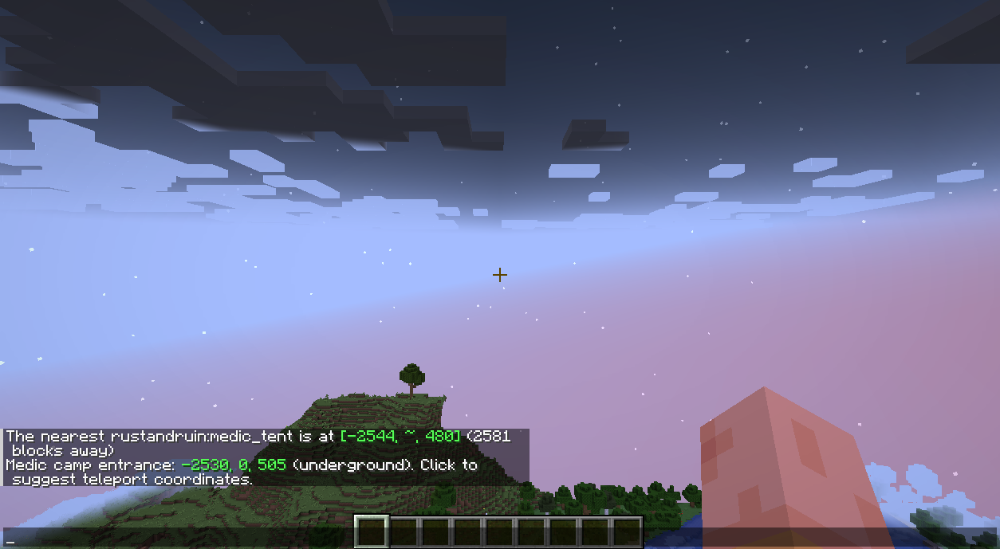
Actual connected-client /locate structure rustandruin:medic_tent with exact underground entrance feedback.
Original PNG
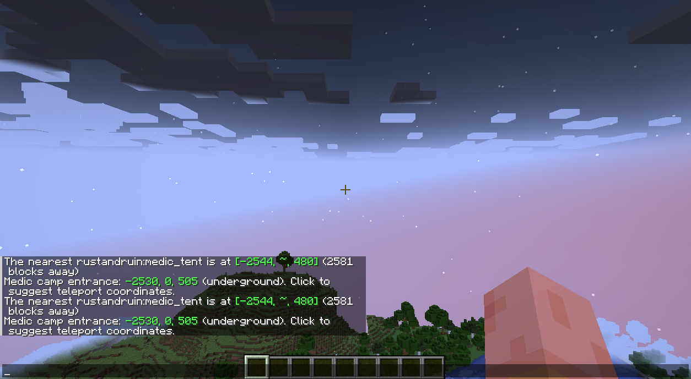
The branded convenience command finds the same native start from the unchanged fixture observer position.
Original PNG
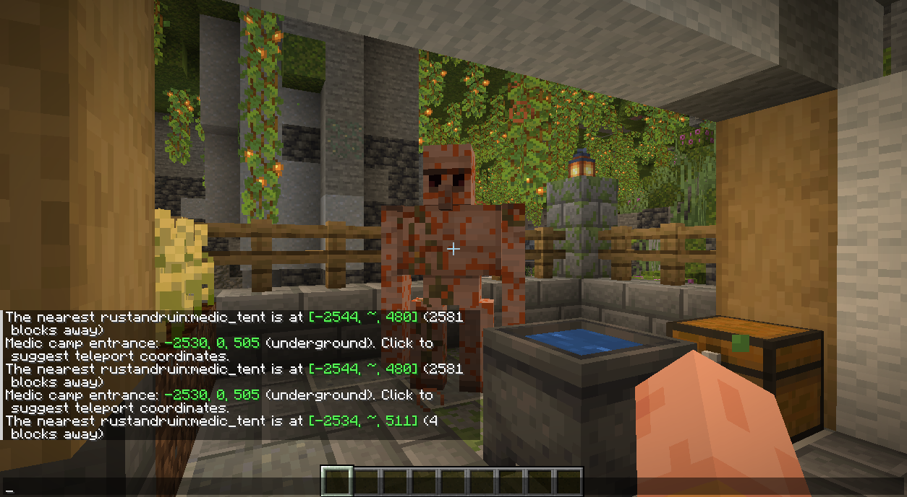
Actual /locate poi rustandruin:medic_tent after entering the camp; POI searches are local, not global.
Original PNG
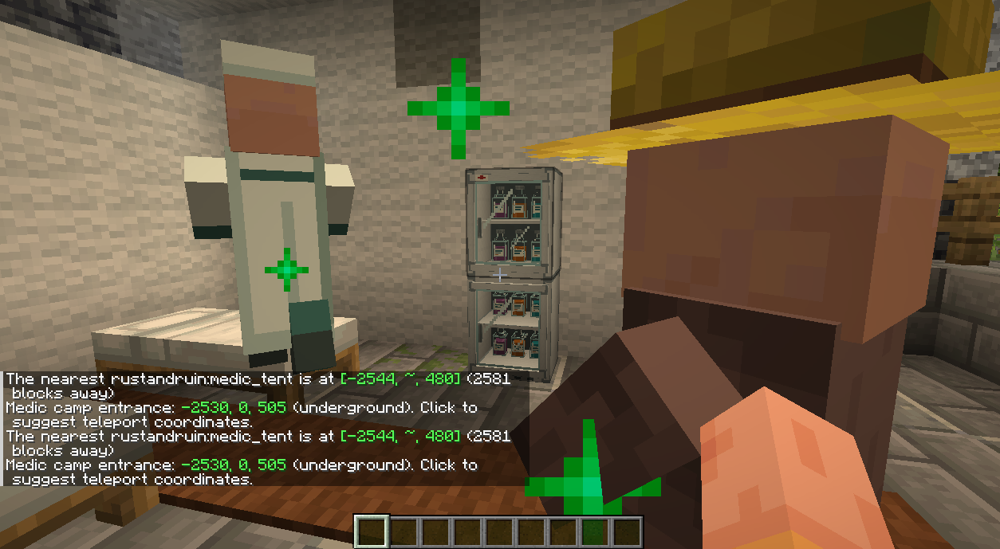
The existing two-block stainless-steel cabinet remains the camp medic workstation.
Original PNG
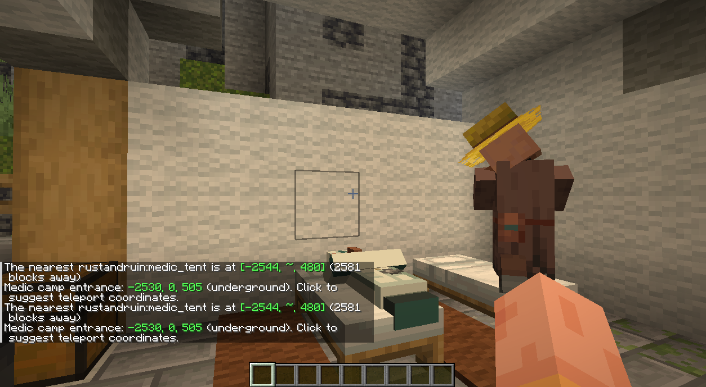
Naturally generated tagged medic; no resident was manually inserted by this controller.
Original PNG
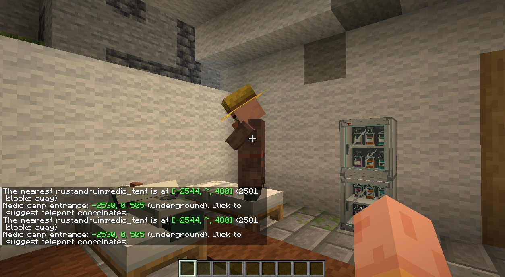
The second naturally generated villager is a farmer with a composter and seed inventory.
Original PNG
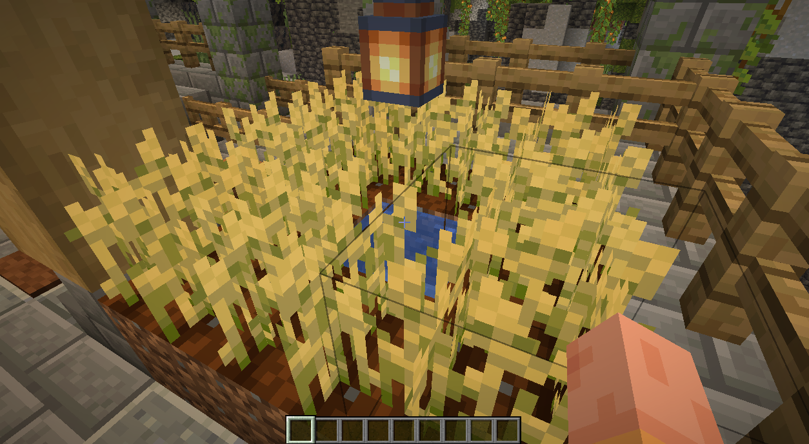
Native wheat, irrigation and lantern light. JSON records all 8 initial crop blocks, live crop count and per-cell light.
Original PNG
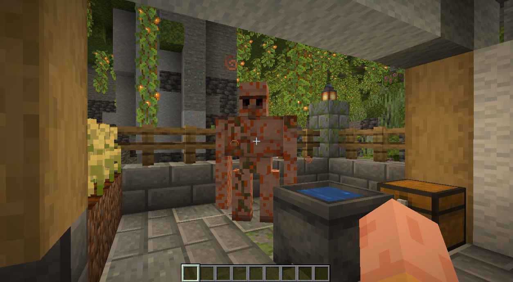
Actual client-tracked Tetanized iron golem:200 maximum HP, friendly player-created flag and saved camp home.
Original PNG
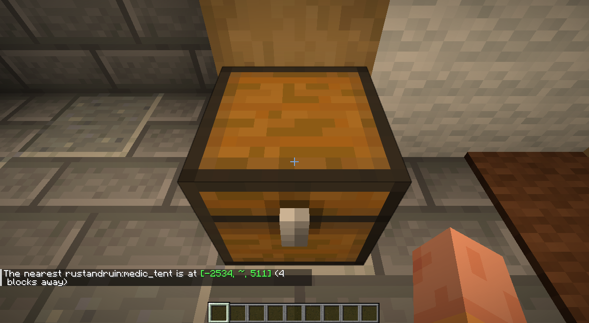
Naturally generated chest approached through the actual connected client.
Original PNG
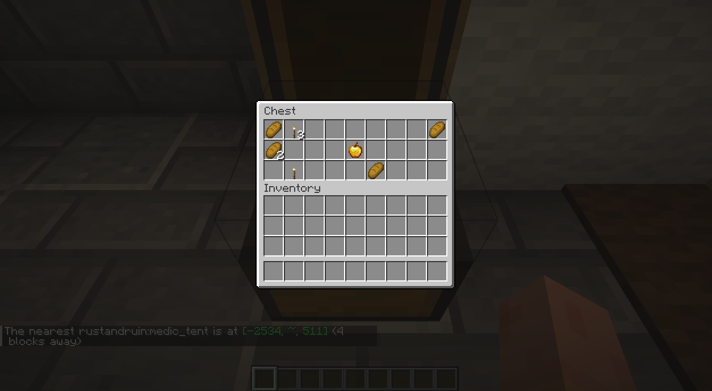
The actual client use action opens the native chest menu and generates its loot table.
Original PNG
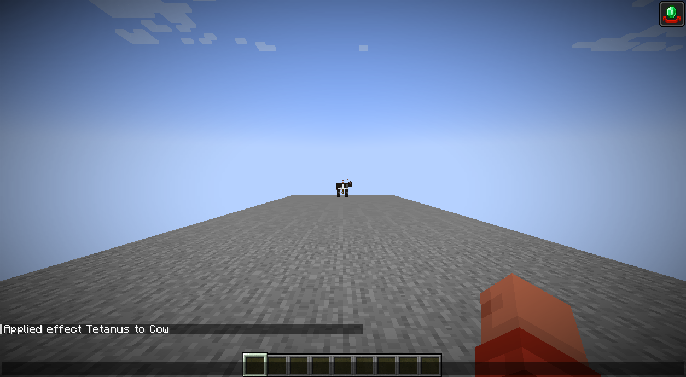
The client observes zero infection playback events outside the normal delivery radius.
Original PNG
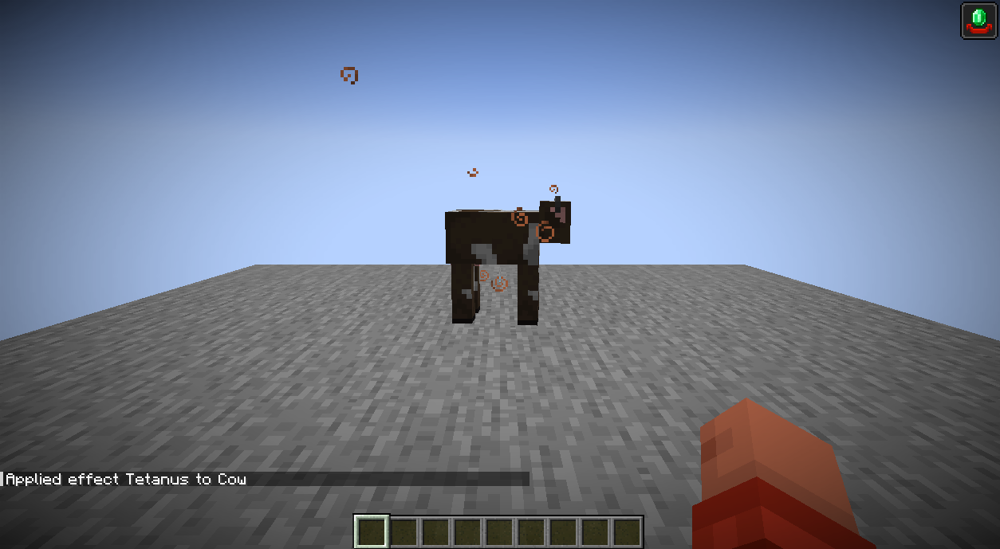
Moving close to an already infected animal does not replay its voice.
Original PNG
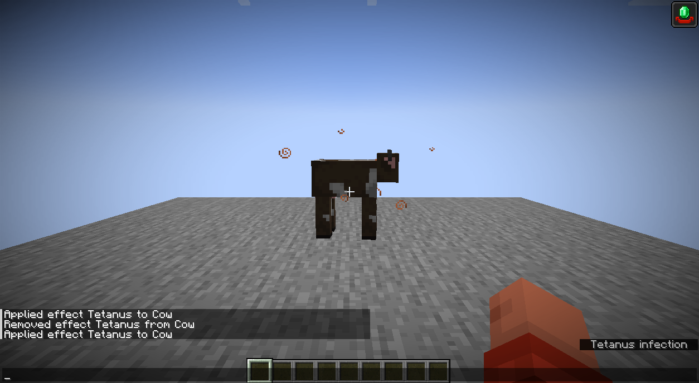
Exactly one real positional sound reaches SoundManager after a native network effect command.
Original PNG
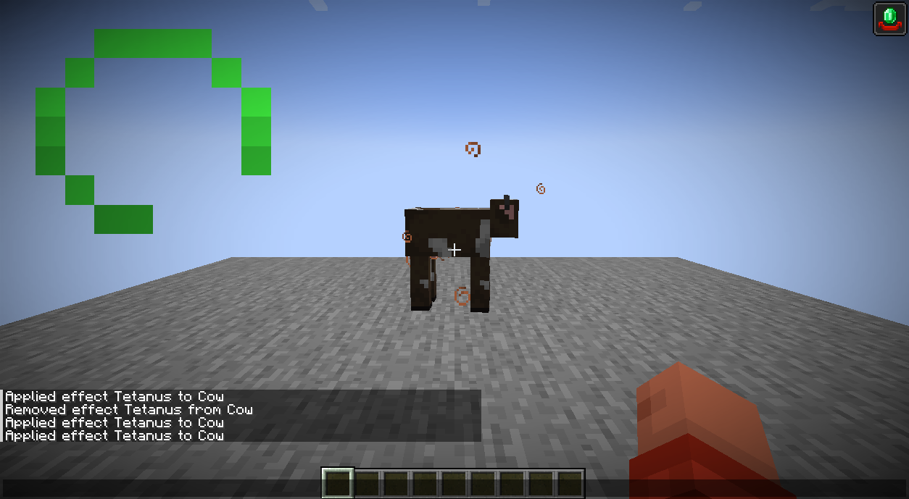
Refreshing the existing episode adds zero new voice play events.
Original PNG
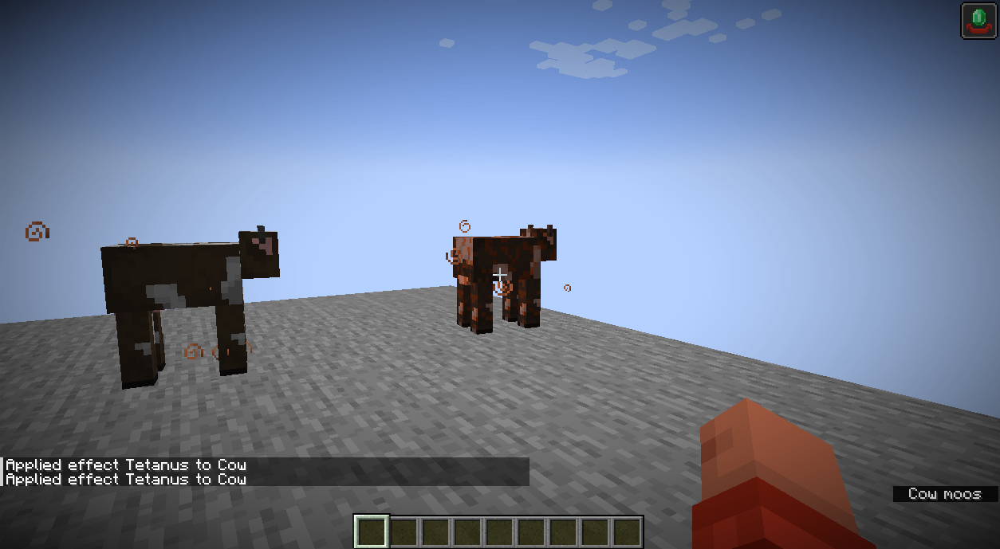
A visible naturally initialized rusted variant produces no infection announcement.
Original PNG
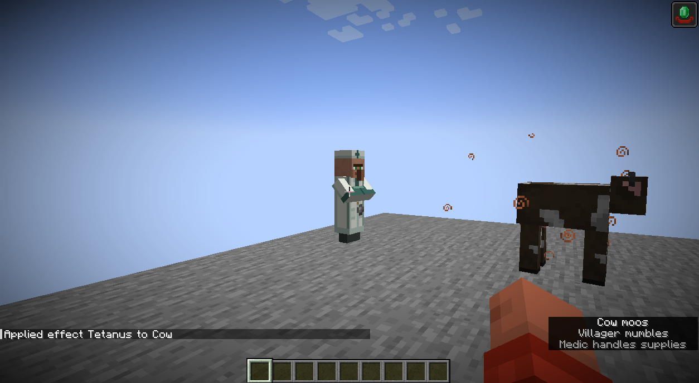
The native profession action reaches the actual client as medic_work, independently of the infection voice.
Original PNGSix seeds, bounded planning comparison
Each row samples nine native grid regions. These are suitable structure-start plans, not fully generated visits. The original 16-site traversal is preserved; 153 fallback sites broaden the search only if needed. The cumulative 54-region sample found 15 current plans versus 1 legacy plan. Nearest distances are camp-center XZ distances from the benchmark origin. Allocation figures in the raw report are cumulative planning-thread allocations, not peak or retained memory. Wider searching can cost more time and allocations.
| Seed | Legacy plans | Current plans | Nearest current plan |
|---|---|---|---|
| 0 | 1 / 9 | 4 / 9 | 450 blocks |
| 1 | 0 / 9 | 4 / 9 | 2511 blocks |
| 246813579 | 0 / 9 | 3 / 9 | 562 blocks |
| 918731 | 0 / 9 | 2 / 9 | 2357 blocks |
| 8675309 | 0 / 9 | 1 / 9 | 3455 blocks |
| -741 | 0 / 9 | 1 / 9 | 2139 blocks |
Medic work sound
The packaged OGG file is copied unchanged. Browser playback previews the asset; the connected-client receipt verifies the native profession event.